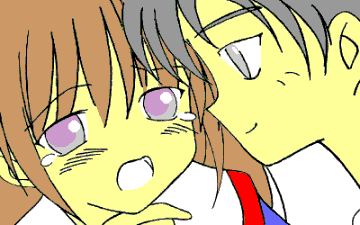

秋から冬へ。あの事件から、もう半年経ったのか……。
オレの名前は伊達乙郎（いつろう）。伊達グループ総帥の五男坊である。
五番目だから「五郎」という名前の案もあったそうだが、さすがに却下されたとか。だが親父はその名前で決めていたらしく、やたらと固執したらしい。それでまず読みを変えて「いつろう」。そしてそれにあわせて漢字をはめた。
ちなみに一つ上の兄貴の名前は士郎。その上は光郎、次男が嗣郎……で、長男は伊智郎だ。
職業は伊達建設の代表取締役である。そして性別は……平日は男性、休日だけ女性（笑）。
実は半年前、オレはある実験で２４時間だけ女に……それも外見的にも肉体的にも十代後半くらいの少女にされたことがある。
しかも、精神までそれに合わせて変えられてしまったのだ。
実験プログラム自体は正常に作動し終了したが、少女になっている間の出来事がきっかけで、オレはこの変身の「被験者」を引き続きやっている。
とはいえ日常はあくまでも会社の社長。それなりに忙しく飛び回っている。
だから休日には無邪気な少女になり、立場を変えて気分も変えて、ストレスを発散させているのだ。
この秘密を知っているのは、この性転換セットを開発した張本人の松戸教授と、その助手で実行犯の幸島小夜子。それから実験の一部始終を見ていた我が家のメイドの山中真彩香と、オレの秘書の「ジローちゃん」こと米良次郎の四人である。
もう一人のメイドである繭村沙紀は、オレが女になった現場も男に戻った瞬間も見ていない。
秘密を知る人間は少ない方がいいので、今のところ彼女には教えてはいない。
……ばらしたくもないしな。
ありすの休日
「Ｍａｉｄ ｏｆ Ｆｉｒｅ Ｆ（Ａｎｏｔｈｅｒ Ｅｎｄｉｎｇ）」後日談
作：城弾

「……しばらく来れない？ どういうことだ？」
オレはメイドの一人、沙紀に問いただした。
「それがですね、あたしが掛け持ちしているお屋敷の奥様が臥せってしまって、家事の手伝いだけじゃすまなくなっちゃったんですよ。……あたしが全部やらないといけなくなって」
「ふむ……」
オレは少し考え込んだ。真彩香は性格はいいが、ちょっととろいし要領が悪いからなぁ。あいつ一人で大丈夫か？
「ご主人様、沙紀さんを許してあげてください。お勤めならあたしが二倍働きますから」
いや別に怒ってるわけじゃないんだけど。
けなげに同僚を庇う真彩香なのだが、現実問題としてそりゃ無理だ。
「……で、いつまでかかるんだ？」
オレは沙紀にそう尋ねた。だが、「見当もつかない」と言うのが返答だった。
「仕方ない……その間は臨時の子を雇うか」
「……そういやジローちゃん、今日からだっけ？ 新人メイドが来るのは」
会社から帰る車の中。オレは秘書兼運転手兼ボディガードのジローちゃんにそう訊ねた。
「そうです先生。いまごろ真彩香さんがレクチャーしているはずです」
沙紀の代わりのメイドを募集して、すぐに一人見つかった。何でも１９歳の大学生で、学費稼ぎのためだとか。
「大丈夫なのかねぇ。沙紀は性格はがさつだが仕事はプロだからな。そのフォローを真彩香と新人で……」
いや、それ以上に問題なのは、その新人が美人かどうかなのだが。
家に帰ると、例によって真彩香が出迎えてくれた。
着ていたコートを脱がせてもらう。……しかしめっきり寒くなってきたな。
「お帰りなさいませ、ご主人様」
「うん、まずは風呂にさせてもらうか……おや？ その娘がピンチヒッターか？」
真彩香の横に身長１６０センチくらいの、メガネをかけた女の子がいた。
「はい、二村つかさです。よろしくお願いします、社長さん」
その新人はぺこりと頭を下げる。おとなしそうな子だ。本がお友だちというタイプか？
「……ふむ」
オレはこの娘を頭から足の先まで、値踏みするように見回した。……よし、合格。
「つかさちゃん、だっけ……可愛いね、君」
その言葉に彼女は、かぁっと頬を赤らめた。純情な子だな。でも初日からあまりからかうとなんだし……とりあえず挨拶しておくか。
「俺の名前は伊達乙郎。……よろしくな」
そう言って、すれ違いざまに彼女のお尻をぱんと叩く。
「きゃあっ！！」
おーおー、悲鳴も可愛いねぇ。
「先生……」
「スキンシップだよ。スキンシップ」
そんなににらむなよ、ジローちゃん。
火曜日。お飾りみたいな社長でも仕事はある。
そして結構いい感じにストレスがたまってくる。……いいぞいいぞ。
そう、苦痛があるからこそ「あれ」が待ち遠しい。オレにとっての最高のストレス解消方だ。
「あれ」の快楽を知ってからは、ストレスもそれのスパイスに過ぎないのだ。
そのくせちゃんとメイドをからかうのは忘れなかったりする。
何と言うかあの新人、「いじめて」オーラを出しているんだよなぁ……
待ちに待った土曜日。オレもちょっと早くに仕事を切り上げる。
今夜から……ふふふ。
嬉しさを押しとどめながら我が家に帰ると、沙紀が来ていた。
出先の旦那が休みの日には家事を手伝うから、日曜はのんびりできるそうだ。
そもそもその家で沙紀を雇っているのは、奥さんの負担軽減のためだとか。……いい亭主だな。オレとは大違いだ。
もっともオレは独身だけどね。
「ねぇ……汗かいたでしょ？ あたしも今週の仕事が終わったところだから、このまま一緒にお風呂入らない……？」
当の沙紀はというと、早速新人の子に言い寄っていた。
相変わらずの手の早さだな。このせいでオレは……それなのに他の女にも手を出すのか。
「よう。沙紀、来ていたんだ」
「あっ、社長さんお帰りなさい」「お帰りなさいませ、ご主人様」「ご苦労さまです、先生」「旦那様っ、おひさ」
「……おい、あんまり女の子にちょっかいかけるんじゃないぞ、沙紀」
不機嫌入っていたかな？ 後ろで沙紀が舌打ちしている。……注意されたから？ それとも手を出し損ねたからかな？
「ところでお前ら、明日の休みはどうすんだ？」
我が家も日曜はメイドたちを休ませている。たまには一人になりたいときもあるし、それに……
「はい、明日は遊園地で遊んできます」
実を言うと、そのことはとうに知っていた。真彩香もわかっててそう答えている。事情を知らないのは沙紀と新人だけだ。
暗に「忘れるなよ」と、念を押したのだ。
オレは「アジト」へと車を走らせた。
ワンルームマンションの地下駐車場。まだ係員がいるよ……仕事熱心だな。
これからのお楽しみを思うとついつい機嫌がよくなり、同時に財布の紐もゆるくなった。
「ご苦労さん。……これで車を磨いといてくれ」
そう言いながら一万円札を渡してやった。砂野と言う名前の若い係員は、大喜びで洗車を始めた。
「山村ありす」と書かれたネームプレートの部屋に入る。何しろ「オレ」の部屋だ。遠慮する必要はない。
「ううっ、寒いな……」
何せ一週間無人だったのだ。火の気を全く使っていないから、なおのこと寒い。
オレはエアコンを動かして、部屋が暖まるのを待った。
この状態で裸にはなれない。いや、別に服を着たままでもいいのだが、「変わる」時は今のオレを完全に切り離したい。
部屋が暖まると、オレは服をすべて脱ぎ捨て、クローゼットを開いた。
そこには色とりどりのワンピースやドレスがぶら下がっている。オレは脱いだものをみな、奥の方へとしまいこんだ。
そして引き出しにしまっておいた「装置」を取り出し、冷蔵庫から持ってきた薬品を慣れた手つきで開封すると、一気に飲み干した。
いつもながら不味い……。本当はすぐにでもいいのだが、敢えて待つ。
そして日付が変わる寸前、オレは装置を起動させた。
「……変身っ」
わざと鏡の前でやってみる。
ジムで鍛えた浅黒い筋肉質の体は白い柔肌に変わり、一回り小さくなる。
ビジネス戦線を戦う精悍な戦士の顔は可憐な少女に。当然社会人男性らしい髪は、さらさらのロングヘアーと変貌する。
バストは膨らみ、ウェストはくびれ、同時にヒップが張り出してくる。
もちろんその時点で男性のシンボルはどこにもない。無駄毛もすべて消えうせた。
オレは……………………ううん、あたしは完全に女になった。
「ＯＫ。うふっ、今日もありすは綺麗だぴょーん♪」
ありすになると途端に性格が変っちゃう。これは女の自分に慣れちゃったことと、改良された装置のせいかしら？
うふふふっ、ちょうど十二時。……明日の十二時に魔法が解けて元の姿に戻るなんて、まるでシンデレラみたいね。
すっかり慣れた手つきで下着をつけ、ネグリジェをまとってベッドに入る。
最近ではクマのぬいぐるみまで抱きしめるようになったから、なんだかかなり「少女化」が進んでいるみたい。
男のときは、「ちょっとやばいかなーオレ」なんて思うけど……一度知ってしまうと麻薬のようだわ。抜けられなくて。
朝、目が覚めたあたしはのろのろとシャワールームへ。
丹念に体を洗う。いつも思うけど、女の子になるとシャワーの感触まで違うのよね。
あたしはバスタオルで体を拭いて、新しい下着の上下をつけた。
作られたこの体は少女の未発達さはあるものの、補正下着なんて必要なかった。ちょっと胸が小さいのが悩みの種。
ガータータイプのストッキングを着け、ひらひらしたワンピースを着る。
それからメイク開始。これがまた楽しいのよねぇ。どんどんと顔が変わっていくでしょ。
最初は失敗ばかりだったけど、沙紀さんや真彩香さんにも教えてもらって、今では一人前に出来るようになったの。
今日は、唇はグロスだけにしとこうかな。シャドーは……どうしよ？
メイクを終えてそれから爪。足はもう寒くてつま先出さないからいいけど、やっぱり手の爪はね。あたしは小さな爪に淡いピンクのラメ入りマニキュアを丁寧に塗った。
余談だけど、これを知ってから女の人がいくら着替えに時間かかっても許せるようになっちゃった。
わかっちゃうと文句言えないわよねぇ。
……よし、全部ＯＫ。あたしはピンクの靴を履くと、待ち合わせ場所へと出かけた。
今日も沙紀さん、真彩香さんと女の友情を育むわよ。
あたしはスカートの裾をひるがえしながら、待ち合わせ場所へと急いだ。
「ありすーっ、こっちこっち！」
大きなたまごのような半球状のドームが見える。
日曜日でおじさんたちが（あたしも夕べまではこの人たちと同じおじさんだったけど……）、競馬新聞片手に歩いている。
あっ、「伊達乙郎」としては知っていてもいいけど、設定年齢１７歳のあたし、「ありす」が競馬新聞を知っていたらおかしいわよね。
気をつけないとぼろが出ちゃうわ。
出たら出たで「お父さんがやっていた」ってことにするけど。実際好きなのよ、お父さん。
とにかくそんなおじさんたちの中にいるせいか、二人とも目立つのよね。
真彩香さんはあたしと大して変わらないロリータファッション。
沙紀さんはパンツルックでスポーティに決めている。……いつ見てもかっこいいわ。禁断の愛に走りそう（その時は男に戻ってコクればいいかも……）。
「ごめんなさぁい。……待ちましたぁ？」
「いいえ。今来たところですよ」
相変わらず優しいなぁ真彩香さん。……普段のおじさんモードだとどうしても素直になれないのに、女の子モードになると素直にそう思えるのよね。
だからかしら？ ストレスがなくなるのは……。物事をいい方向に考えて。
「よっし。揃ったところで出かけましょう」
沙紀さんを先頭に、あたしたちは遊園地へと歩いていった。
それにしてもすごいわぁ。あちこちコスプレだらけ。マスカレード？ １１月だからハロウィンも過ぎちゃったし……
「今日はそういうイベントみたいですよ。ほら、あちらにはフォスターが」
銀色の大男さんのことかしら？
「こちらにはクオン皇女御一行様がいますよ」
「見てみて、あのミラージュガールズ。全員男よ」
ふぅん。でもこれだとあたしや真彩香さんの格好もかすんじゃうわね。
アトラクションエリアで、沙紀さんがジェットコースターに乗ろうと言い出した。考えてみれば遊園地に来たら当然よね。
でもあたしは……
「えーっ。怖いですぅ、これ」
「なぁによありす。女ならこのくらい平気でしょっ！」
どういうわけかこういう絶叫マシーンは女の方が強いみたい。あたしも男のときはぜんぜんだめですぅ。そして今もだめですぅ。
「なんかうちの旦那様みたいね。あの人も絶叫系ダメだからねー。ダンディ気取っているけどお見通しなんだから」
くくく……と沙紀さんは含み笑いをし、事情を知っている真彩香さんは慌ててます。
あの、思いっきり本人の前で喋ってますけど……
「……沙紀さぁん。手を離さないでくださいねぇ」
どうしてか知らないけど、男のときは笑って平気で歩ける「お化け屋敷」が、女の子になっちゃうとひどく苦手になっちゃうの。
「ホントに怖がりだね、ありすは。……こんなの作り物だよ」
沙紀さんが苦笑しているのが暗闇でもわかります。
「あの……あたしもとっても怖いんですけど……」
わーい、真彩香さんお仲間。……なんて喜んでいたら、天井から血まみれの落ち武者が。
「「きゃああああああああああっっ！！」」
二人ハモって悲鳴を上げてしまいました。
遊園地内のオープンカフェで一休み。やだ……涙まで出てきちゃった。
「はぁはぁ……怖かったですっ！！ 沙紀さんっ！！」
あたしは目元をぬぐいながら沙紀さんに抗議した。なんだかあちこちから男の人の視線を感じるのは、気のせいかしら？
「臆病だなぁ、ありすは」
沙紀さんは鼻で笑うけど、ホントに怖かったんだから。でも……ここに本来のあたし、男のあたしがいたらきっと笑うだろうな。
なんだか薬の効き目がピークなのか、あたしが元々男だということが、今は全く実感ない。
もし今この場でかっこいい男の人にくちびるを求められたら、差し出してしまうかも♪
「貝藤さん凄いですね。あのお化け屋敷で逆にお化けに勝っちゃうなんて」
……ん？ そんな凄い人がいるの？ あたしは興味を引かれて声のほうを見た。
綺麗でスタイルもいいけど、なんだかやたらにおどおどしたロングヘアの女の子が、隣にいる男の人をほめていた。
「ん？ もっとほめていいぞ、由佳。……ちゅーかオレ様を称えろ」
つぎはぎジーンズの服を着た、ぎょろ目の男の人……なんだか第一印象からして、「ただのバカ」？
「……あんまり調子に乗らない方がいいぞ、貝藤」
もう一人いた、童顔の男の人がやんわりと嗜めた。
「木葉ぁ、おまえいつも辛気臭いんだよ。もっと人生楽しんだ方がいい……」
その貝藤さんって人が声を閉ざしたのは、あたしと目が合ったから…………みたい。
「・・・びゅううてぃほぉぉぉっ」
彼がおもむろに立ち上がり、あたしはなんだか本能的に後ずさってしまった。
「可愛い……へい彼女っ、オレと付き合わないかい。ちゅーか付き合えっ」
「い……イヤッ、いやぁぁぁぁっ！！」
前言撤回。あたしやっぱり男の人には唇出せません。
背筋に得体の知れない悪寒が走ったあたしは、あわてて走りだした。
「あっ、待ちなってばスィートハニーっ！」
貝藤さんが追ってくる。
「やめろよ、貝藤っ！」
木葉さんが止めようとそのあとを追いかけてくるが、貝藤さんは止まらない。
後から思うとよくあれだけ女の足で走れたな、と言うスピード（しかもひらひらスカート）で、あたしは逃げ続けた。
無我夢中で逃げていたあたしは、何かに衝突した。
電信柱？ 人？
「……きゃっ！！」
あたしは突き飛ばされて、しりもちをついてしまった。
「あっ、ごめんなさい」
男の子だった。なんだか最近どこかで見たことある気がするけど、どこでだったっけ？
「つかっちゃん！」
一緒にいた女の子が声を上げ、彼はあたしを立たせると、
「ごめんね、急いでるんだ」
そう言ってあわてて走り出した。
……冗談じゃないわ。真彩香さんや沙紀さんともはぐれちゃって、心細いんだから。
「あたしも追いかけられてんですぅ。助けてください」
「えっ？」
どうやらこの男の子も誰かに追いかけられているらしく、あたしたちは一緒に逃げることにした。
後ろでは、貝藤さんのあとを追いかけてきた木葉さんが、男の子を追いかけていたハンサムさんと鉢合わせになり、何やら喧嘩を始めていた……
「助けていただいてありがとうございます」
まずは助けられたお礼。あたしはぺこりと頭を下げた。
「えっと……」
話すきっかけを探しているのか、彼は言葉に詰まった。あっ……そうか、名前がわからないのね。
「あたし、山村ありすといいます」
「あ、どうも。……僕は二村 司」
「あたしは高城さつき」
えっ？ 「つかさ」さん？
「どうしたの？」
「いえ……知り合いの女の人に同じ司さんという名前の人がいて、苗字も同じなんですぅ」
「へぇー」
“司”という名前は男女どちらでもあるから、同姓同名もない話でもないけど、これは凄い偶然だと思いますぅ。
「つかっちゃん」
さつきさんが小声で割り込んできた。……そうよね、『デート』の最中に他の女の子がいるのはちょっとね。
「それじゃあ、僕たちはここで」
だから一人にしないでってば。
「……ち、ちょっと待ってください」
「あの……まだ何か？」
「一緒にいてくれませんか？」
はぁ？ と言う表情を浮かべる司さん。……無理もない。
「ねぇ、悪いけど今日は二人で遊びに来たの。遠慮してくれる？」
彼に代わって答えたのはさつきさん。同性相手だから遠慮はないみたい。
「でもでも」
あたしはおもわず両手の拳を合わせて可愛らしく振る。
「……どこかで会ったことあったかしら？」
「いいえぇ？」
何を連想したのかしら？ それはともかく、またさっきの貝藤さんみたいなのがいたらイヤだわ。
「お願い。実は一緒に来た人たちとはぐれちゃったんです。探したいけど、またさっきみたく男の人に追いかけられたらいやなので……」
「だからって……」
「あたしのことは無視しちゃっていいですよ。他人からグループに見られればいいだけですから」
「ナンパ防止のためってわけか……。困っているみたいだし……わかったよ、僕たちと一緒に連れの人を探そう」
「つかっちゃん！」
彼女が抗議してくるけど、なんだか雰囲気変ったわね、司さん。
「女の子が困っているんだから、助けてあげようよ」
言われて同じ女の子としては黙るしかなくなっちゃったらしい。悪いことしたかな？
「あの占い……当たったわね……」
「えーと……山村さん」
「ありすって呼んでください」
司さんは、いかにも美少年って感じの声（どんな声なのかしら？）で問いかけてきた。
この際だから、あたしのことも名前で呼んでもらおう。女の子はいつか苗字が変わるものだしね。
「じゃあ、ありすさん、携帯電話は持ってない？」
「そうね、それで電話して落ち合えばいいじゃない」
なんだか厄介払いをしたがっているように見えるのは気のせい？
「ごめんなさい、持ってないんですぅ」
「そうか……」
自宅と別にワンルームマンションを借りられるあたしに、携帯電話を持つことくらい造作もない。
けれど厄介なのは名義。どこを探しても山村ありすなんて名前の人間はいない。それに万が一沙紀さんや真彩香さんが仕事の合間に、つまりあたしが「男」でいるときにかけてきたら……
もちろん留守番電話で応対するけど、それがあんまり続くとどうなるかしら？ 日中なら「授業中だから切っていた」でごまかせる。その後はアルバイトとかでごまかせる。けれどもし、「放課後」にかけられたら？
言い訳が厄介だから、はじめから携帯電話は持たないことにした。
それから完全に「別人」になっているのに、そんなときまで携帯電話で縛られるのがいやだったというのもある。
どうせ沙紀さんたちとしか会わないし、日曜日は決まって彼女たちと遊んでいるし。
「じゃあ君がもといた場所に行ってみようか」
「え〜っ、だってもしさっきのお兄さんがいたら……」
「その時は追っ払ってあげるから。それに遠くから確認だけでも」
そう言われては仕方ないから、あたしたちは元いた場所に戻ってみた。だけど……
「……いないですぅ」
「入れ違いになっちゃったかな？」
「どうしよう？ 闇雲に探しても仕方ないし」
「ねっ、遊びましょう。うろちょろしていたらあちらから探し出してくれるかもだし」
なんちゃって。せっかくだから年頃の女の子な気分をとことん味わってみたいわ。まずは健全なグループ交際。
「うーん、正論のようなむちゃくちゃなような……」
「いいじゃない、遊びに来たんだし」
「きゃーっ、お姉さん話せるぅっ！」
あたしは思わずさつきさんに抱きついた。なんだかすっかり同性って感じで、何の抵抗もなかった。
「ちょ……ちょっと」
困り顔のさつきさんと、苦笑している司さん。えへっ♪
ジェットコースター。沙紀さんが好きだからならんでいるかも……と思ったけど、いなかった。
念のためしばらく待ってみたけど、やっぱりいない。
「次行こうか……」
司さんに言われて向かったのが、
「やだやだやだやだっ！！ 絶対いやですぅっ！！」
よりによってお化け屋敷なんてイヤーっっ！！ あたしは全力で拒絶した。
無理と思ったのか、「入る」とは言わないでくれた。……よかったぁ。
「ねぇ、空から探してみません？」
あたしの提案。でも見つけてもすぐに駆けつけられないし、見失っちゃうかな。
まぁいいか。見当だけでもつけば。
｢いいわね、行きましょう｣
さつきさんが珍しく賛成してくれた。よかったぁ。デートの邪魔で嫌われてると思った。
「わぁーっ」
「人がちいさーい」
観覧車に乗ったあたしは無邪気に喜んでしまった。なんだか「童心に帰る」とはよく言うけど、娘心になりきるのはなんていうのかしら？
それにしてもあたしが……本当は３５歳の中年男性が小娘そのものに……当然だけど、司さんにはただの女の子にしか見えてないでしょうね。
「いませんねぇ。もう、何処いっちゃったのよ」
「帰っちゃったとか？」
「それは考えにくいけど……放送で呼び出してもらおうか？」
司さんの提案で、あたしたちは案内所へと移動した。
その途中。
「おっ、可愛いじゃん彼女たちぃ〜っ」
革ジャンにズボン、金髪とモヒカン。……なんだか映画に出てくる悪役みたいな二人が、さつきさんとあたしに目をつけたらしい。
怖いお兄さんたちを避けるようにしてすれ違ったけど、モヒカンの方が通せんぼ。
じゃあと引き返そうとしたら、金髪が回りこんでいた。……挟まれちゃった。
「へへへ、俺たちと遊ぼうぜぇ〜っ」
みたいな……じゃなくて、本当に悪役だった（笑）。
定番のセリフを言うなり、モヒカンはあたしの、金髪はさつきちゃんの手を強引につかんできた。
「イヤッ、いやぁ！！ 助けてぇっ！！」
お腹の底から甲高い声で悲鳴を上げるあたしに比べて、
「何するのよっ！！」
空いている手で相手の頬を張りとばし、ひるんだところを逃げだすさつきさん。
あたし女の子になりきり過ぎちゃったみたい。……怖くて出来ない。
「つかっちゃん！ ありすさんをっ！」
さつきさんにそう言われて、司さんはモヒカンに突っかかっていく。
モヒカンはあたしを抱えているからそんなに動けないみたく、大きな体でも小柄な司さんにてこずっていた。
それにしても司さん、なんてかっこいいのかしら。どことなく中性的で線が細そうなのに、あたしのために必死に……
「野郎ッ！」
不利と見た金髪がさつきさんを追うのを諦めてこっちに向かって来た。
いけない！ ２対１ではさすがに……
金髪が司さんの背中に、両手の拳を振り降ろした。
「……がっ！！」
前のめりになった司さんのおなかに、今度はモヒカンの蹴りが。
さらに後ろから金髪の蹴りが。
「やめてぇぇぇぇっ！！ お付き合いでもなんでもしますから司さんをいじめないでぇぇぇっ！！」
あたしは思わず涙を浮かべて叫んでいた。あたしのために傷つく司さんを見ていたら、心の底から女の子になっちゃったみたい。
でも彼は、そのままうめき声を上げて倒れ伏した。
「最初からそうすりゃいいのに」
「そうそう、こいつも痛い目を見ないですんだんだぜ」
モヒカンの方が司さんの顔目掛けてつばを吐く。なんてひどいことをするのっ。
あたしは彼らに無理矢理連れて行かれそうになる。でも零時が来れば自動的に男に戻れる。それまでなんとか体を守りきれば……
「待て」
あの声は……やめて、司さん。これ以上立ち上がらないで。
「あーん？」
「何だ坊主。まだいたのか」
モヒカンと金髪は、すっかり余裕の表情だ。
「その娘を、すぐに放すんだ」
司さん……怒りで表情がりりしく……気のせいか体つきまで精悍に。
「……どうやら痛い目にまだ遭いたいらしいな」
金髪が彼に迫る。司さんはいつの間にかはめていた赤い腕時計から、何かメモリーカードのようなものを抜き取った。
「Ｒｅａｄｙ」
「死ねや。こらぁっ！！」
金髪さんが大きなモーションで殴りかかると同時に、時計のスイッチを入れる……
「Ｒｅｆｏｍａｔｉｏｎ」
そんな声が聞こえた思ったら、ものすごい速さで司さんがダッシュした。まるで豹の様にしなやかに。
そして金髪のパンチをかいくぐり、そいつの腹部に一発！！
「ぐ……ぶぅっ……」
まともに胃袋に入ったらしく、両目を見開き口を半開きにしたまま体をくの字に曲げる金髪。
低くなった顎に、間髪入れずに下からの左ストレート。アッパーじゃなく天を貫くように顎を打ち抜く。
そしてがら空きののど目掛けて右ストレート。鍛えようのないのどに一撃を食らって、金髪はそのまま悶絶する。
「？？？」
あたしを抱えているモヒカンは、神速の動きについていけなくて何がなんだかわからないみたい。
司さんは一度右肩をぶるんと振って手をシェイクさせると、今度はこちらめがけてダッシュ……そして助走をつけてジャンプ。
「・・・ぃやああああっっ！！！！」
気合とともに放ったキックが、モヒカンの顔面に炸裂。もんどりうって倒れる巨体。
あたしはやっと解放された。
『Ｔｉｍｅ Ｏｕｔ』
あ……力が抜けた。緊張が緩んだみたい。そして、さつきさんに連れられたおまわりさんたちがやっと来た。
事情聴取と目撃者証言で司さんはお咎めなしとなった。正当防衛ってことかしら？
「ごめんなさい。勝手にお借りして」
はめていた腕時計を、近づいてきたハンサムさんに返す司さん。……あらっ？ この人さっき司さんを追いかけてきて、木葉さんと喧嘩してなかった？
「いいや、気に入ったぜ。女の子を救うためにあいつらに立ち向かうなんてな。……それにどうやらこれを見ていただけで、猫舌を笑ったわけじゃないらしいし」
ハンサムさんが腕時計を指して笑みを浮かべた。
そうよ、司さんはあたしの王子様。……もし今ならこの体ごとあなたに差し出すわ♪
「ありすさーん」「ありすーっ、どこにいってたのよ？」
「あーっ！ 真彩香さん、沙紀さぁん！！」
やっと二人と合流できたわ。騒ぎを聞きつけて来たのかしら？ 司さんが何故か不思議そうな表情をしていた。
「……今日は本当にお世話になりました」
あたしは司さんたちにぺこりと頭を下げた。真彩香さんと沙紀さんも一緒に頭を下げてくれる。
助けてくれてありがとう……あたしの王子様。
「いえ、危ない目に遭って大変だったね」
「そんなぁ……助けてくれて感動しましたぁ」
「そうね。つかっちゃん、かっこよかったわよ」
本当です。……あっ。いいこと思いついちゃった。
「そーだ！ つかささん、ちょっと……」
彼は深く考えずにあたしに顔を近づけてきた。そのほっぺにいきなりＣｈｕ♪
「……！？」
「感謝の印です。じゃあねーっ！！」
やっといてなんだけど恥ずかしいわ。照れて赤くなったあたしは、手を振りながら沙紀さんたちとその場をあとにした。
後ろでは……
「つ、つかっちゃん……っ！！」
「ま……待って！！ こ、この場合はいきなりで……」
う〜っ、悪いことしちゃったかしら……？
沙紀さんたちと別れてマンションに戻り、零時を待つ。
そろそろ始まったわね。……あたしの体は徐々に元の男に戻っていく。同時に精神も男のものに……
戻った途端に猛烈な恥ずかしさと自己嫌悪をおぼえて、オレは誰もいないのに布団を頭からかぶってしまう。
「ああっ、オレはなんてことを考えてたんだ！！ おまけにほっぺにキスまで……（女では）ファーストキスだったんだぞ……」
少女として目一杯楽しんだのは事実だが、オレ段々やばい方向に行ってないか？ しばらくこれやめた方がいいかなぁ……
月曜日。
今日も退屈な仕事が終わった。さっさとみんなの待つ家に帰ろう。
オレはいつもどおり七時に帰宅する。
「お帰りなさいませ」
例の新人メイドが、妙に晴れやかな表情で出迎えてくれた。
「おう、ただいま。……ん？ なんかいい表情しているね。いいことでもあった？」
「はい。お休みは遊園地で遊んできました。そこで可愛い女の子……ではなくてかっこいい男の子と知り合って」
昨日か……。オレ……ううん。あたしも楽しかったなあっ♪
「ほー、実は俺も遊園地でね、王子様……じゃなくてお姫様を見つけてさ」
「うふふふふふ」
「あははははは」
オレと新人メイドは、お互いになぜか乾いた笑い声を上げていた。
そしてまた土曜日。
先週はああ言ったけど、一度知ったこの禁断の遊び。麻薬のように抜け出せない。
オレは慣れた手つきで薬を開封し、喉の奥に流し込んだ。
あとがき
今回は見ての通り、テーマは「競演」。
互いに変身するだけに、本当の姿と仮の姿で別の出会いで。
それぞれ異性として相手を見て。
ゲストキャラはおなじみつかっちゃん＆さつきちゃん。
変身少女同士の競演ですが、互いに正体を知らないままで。
会場がどこかは一目瞭然。まぁ特撮でも使う場所ですし（笑）。
コスプレ軍団は当初は実在のアニメや特撮、マンガから拾うつもりでしたが、文庫さんへの投稿なので勝手ながらちょいと拝借。
この場をお借りして真城悠さま、この市場さま、ライターマン様にお礼……と言うよりごめんなさい。コスプレと言う設定ですがお借りしました。
ゲストはあちらが「５５５」サイドなので、こちらはオルフェサイドで（笑）。ヘビの彼ならほんとに女の子追いかけるくらいやりそうだし。
あと気がつきにくいかもですが、駐車場の係員は大量のモンスターを飼っていた某ライダーですね。
これは｢Ｍａｉｄ ｏｆ Ｆｉｒｅ Ｆ（Ａｎｏｔｈｅｒ Ｅｎｄｉｎｇ）｣を受けてのものです。正当エンディングだと女の子になりっぱなしなので、出来なかったので御容赦を。
それともう、「読者の分身」としての役目も終わったので、お約束した後日談用に男としての名前も設定したのでここで使用。
伊達はとにかく威厳が欲しくて。後は｢伊達男｣と言うのもあり。乙郎は本当に五郎から音を変え漢字を当てました。
というわけで｢メイド〜｣ではもう一回だけ。正当エンディングの後日談、｢ありすｉｎハイスクール｣をお送りする予定です。いつになるか……
今回もお読みいただきありがとうございました。
城弾
『少年少女文庫向け寄贈作品集』へ
『少年少女文庫』へ
七号館へ
トップページへ